Review chi tiết menu đồ uống và không gian nội thất tại trà sữa R&B Tea
Chính thức bước vào thị trường Việt Nam vào năm 2018 và chỉ sau 5 năm, trà sNếu là một tín đồ của những ly trà sữa thơm ngon, thì chắc hẳn bạn cũng từng nghe qua cái tên R&B Tea rồi đúng không? Đây là một thương hiệu trà sữa nổi tiếng đến từ Đài Loan, với hơn 1000 cửa hàng trải dài ở nhiều đất nước như Trung Quốc, Việt Nam, Mỹ, Singapore, Campuchia và In-đô-nê-xi-a. Hãy cùng mình khám phá những điều đặc biệt trong menu đồ uống và không gian nội thất tại R&B Tea nhé!1.Đôi nét về thương hiệu trà sữa R&B tea
Ý tưởng về một thương hiệu trà sữa nảy sinh khi Bruce không thể tìm thấy được một ly nước chất lượng để giải tỏa căng thẳng công việc. Đồng thời, anh cũng nhận thấy được tiềm năng to lớn của thị trường này. Chính vì lẽ đó, vào năm 2006, Bruce và người bạn đồng hành Lee đã cùng nhau nghiên cứu, tạo nên thương hiệu trà sữa R&B Tea như hiện nay.
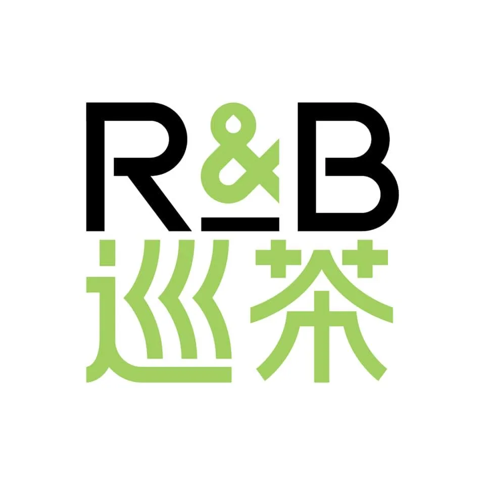 Thương hiệu R&B TeaMục tiêu của họ không chỉ mang đến khách hàng một ly nước chất lượng mà còn là việc giới thiệu văn hóa trà của Đài Loan tới cộng đồng quốc tế. Thế là hành trình của R&B Tea bắt đầu từ đó.
Thông tin liên hệ R&B Tea
- Giờ hoạt động: Tùy từng chi nhánh, có thể dao động từ 8:00 - 22:00
- Website: https://centraltea.vn/
- Hotline: 0898.222.633
2. Review menu đồ uống tại R&B Tea
Hiện tại, R&B Tea chỉ tập trung vào hai dòng sản phẩm là trà sữa và trà trái cây. Giá chỉ dao động từ 34,000đ đến 66,000đ, đặc biệt ly nước tại quán có size rất bự nên giá tiền như vậy rất ư hợp lý!
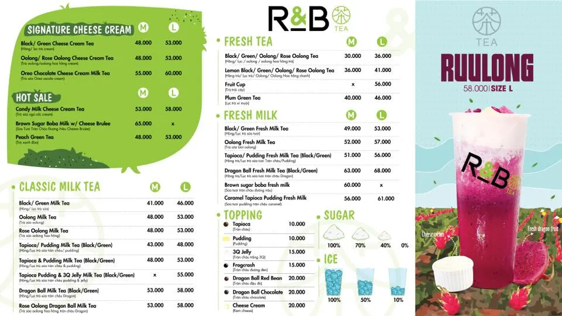 Hình ảnh về menu của R&B TeaCòn nói về chất lượng thì bạn hoàn toàn yên tâm nha! R&B Tea với mục tiêu hàng đầu là đưa ra sản phẩm chất lượng đến bạn nên quán hoàn toàn nói không với hương liệu, phẩm màu cũng như đường hóa học.
2.1. Sản phẩm trà sữa tại R&B Tea
Sự kết hợp giữa lá trà xanh nguyên chất từ vùng núi cao Sri Lanka, Đài Loan và Nhật Bản, cùng sữa tươi Anchor chất lượng từ New Zealand, R&B đã tạo nên một hương vị gây thương nhớ.
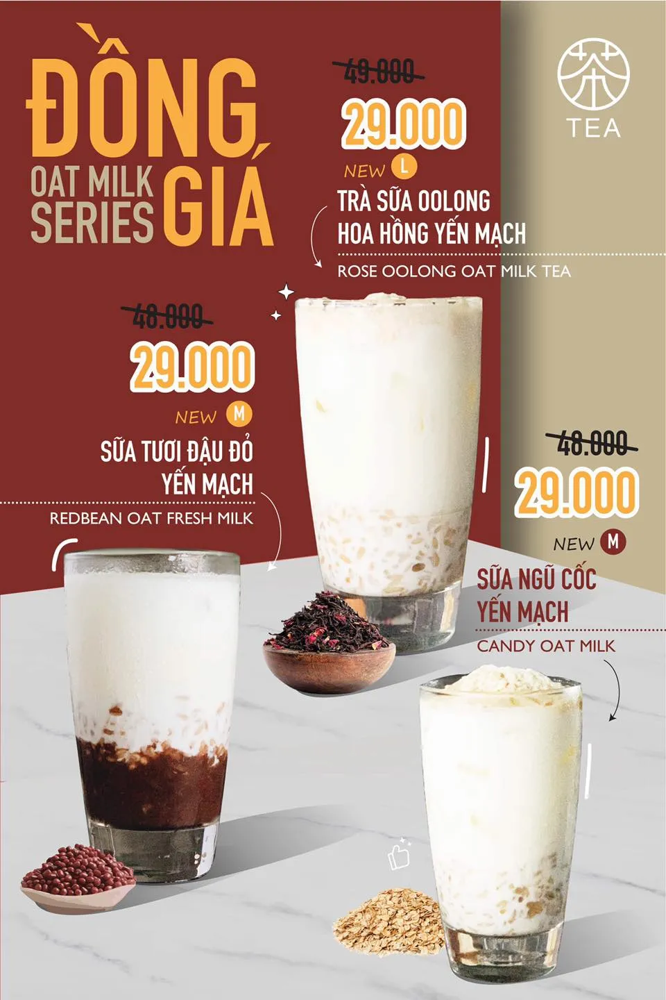 Trà sữa yến mạch vô cùng bổ dưỡng đến từ R&B TeaSự độc đáo của quán không chỉ nằm ở chất lượng nguyên liệu mà còn ở những topping đặc sắc.
- Trân châu Frog crash là một trong những sản phẩm đặc trưng của thương hiệu trà sữa R&B Tea. Được nấu chín trong 2 tiếng với đường nâu theo công thức gia truyền, Frog crash mang đến hương vị đậm đà và thơm ngon. Từng viên trân châu tròn tròn, mềm dẻo, hòa quyện với vị ngọt thanh của đường nâu, tạo nên một trải nghiệm khó quên cho người thưởng thức.
- Trân châu Dragon ball là một loại topping mới được R&B Tea ra mắt gần đây. Với kích thước khổng lồ, bột siêu mềm và nhân đậu đỏ chín bên trong, Dragon ball đã nhanh chóng trở thành một trong những món được yêu thích nhất tại quán.
Điểm đặc biệt của R&B Tea là hình thức hấp dẫn, từ những viên trân châu ú nubéo ngậy. Chiếc cốc nhựa dung tích gần 1 lít vừa giúp giữ cho trà không đổ, vừa mang lại cảm giác mới lạ với thiết kế độc đáo, nổi bật với nút hình trái tim xinh xắn.
2.2. Trà trái cây
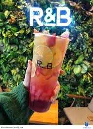 Trà trái cây tươi mát mẻ tại R&B TeaNếu bạn là người yêu thích trái cây, R&B Tea cũng có nhiều loại trà trái cây thơm ngon, hấp dẫn. Trà trái cây của R&B Tea được pha chế từ các loại trái cây tươi ngon, được lựa chọn kỹ lưỡng. Với hương vị tươi mát, thanh tao, trà trái cây của R&B Tea là lựa chọn hoàn hảo để giải khát trong những ngày hè nóng bức.
2.3. Những thức must try mà bạn nên thử qua khi đến R&B Tea
- Pinacha
Pinacha là sự kết hợp giữa trà lài và thơm dầm. Ly nước này cho bạn cảm giác chua chua ngọt ngọt ở đầu lưỡi cùng hậu vị mang hương thơm của trà. Món này rất xứng đáng cho những ngày hè nóng bức của Sài Gòn.
- Ruulong
Được R&B Tea ra mắt vào năm 2019, nhưng trong những ngày gần đây thì ly nước Ruulong lại hot trở lại. Nếu bạn nào đang cần một ly nước để đu theo trend “Thanh long” thì ghé qua R&B Tea nha!
- Candy Cream Cheese Green Tea
Những ngày cuối năm, ai ai cũng bận chạy deadline thì cần lắm một ly trà sữa Candy Cream Cheese Green Tea. Vị béo béo mặn từ lớp cream bên trên, hương vị chát chát từ trà xanh, kết hợp với sữa yến mạch vô cùng healthy.
- Lục trà xí muội
Trà và xí muội là một sự kết hợp quen thuộc, nhưng lần này, R&B Tea đã mang đến một phiên bản mới đầy hấp dẫn. Vị thanh mát của lục trà hòa quyện cùng vị chua ngọt của xí muội và tắc, đặc biệt là mùi thơm hấp dẫn từ sirup xí muội đặc biệt của R&B Tea sẽ là làn gió tươi mát giúp đánh bay cái nóng mùa hè.
Khi thưởng thức trà xí muội R&B Tea, bạn sẽ cảm nhận được vị chát nhẹ của lục trà, vị chua ngọt của xí muội và tắc, và vị mằn mặn đặc trưng của sirup xí muội. Tất cả hòa quyện với nhau tạo nên một hương vị vô cùng hài hòa và thơm ngon.
3. Review không gian nội thất tại R&B Tea
3.1. Không gian bên ngoài của R&B Tea
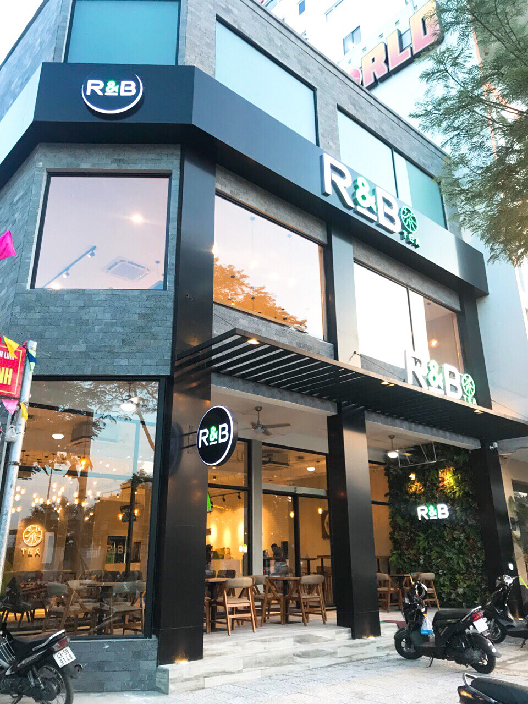 89-91 Nguyễn Văn Linh, Nam Dương, Hải Châu, Đà NẵngVề ánh sáng, căn phòng được bố trí một cửa sổ lớn để đón ánh sáng tự nhiên. Ánh sáng tự nhiên giúp không gian trở nên sáng sủa, thoáng đãng và tràn đầy sức sống. Ngoài ra, căn phòng còn được trang bị hệ thống đèn điện để đảm bảo đủ ánh sáng khi cần thiết.
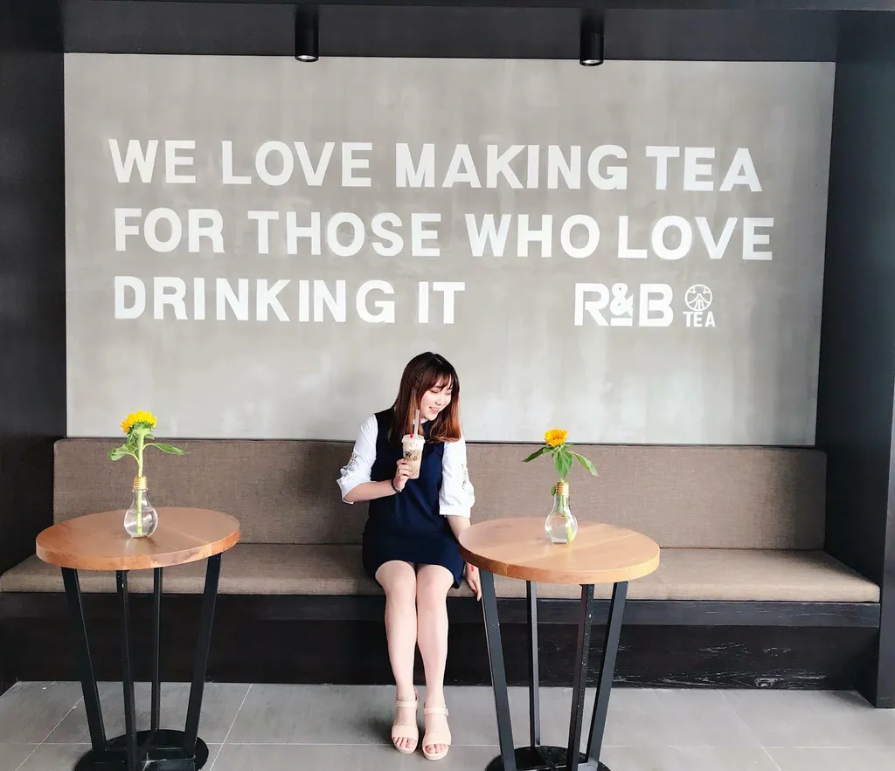 Khu vực được nhiều bạn trẻ đến check-in tại 39 Phạm Ngũ Lão (Đà Lạt)Về màu sắc, căn phòng được sử dụng tông màu trung tính, tạo cảm giác nhẹ nhàng và thư thái. Ngoài ra, quán còn được trang trí thêm một số cây xanh, giúp không gian trở nên tươi mát và gần gũi với thiên nhiên.
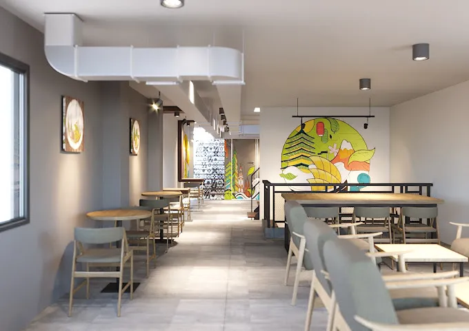 Khu vực bên trong R&B Tea 16 Đường số 1 (Gò Vấp, Hồ Chí Minh)R&B Gò Vấp có diện tích khá lớn so với nhiều chi nhánh khác ở thành phố Hồ Chí Minh. Các bàn ghế ở đây được làm bằng gỗ, với thiết kế đơn giản nhưng hiện đại. Quán còn bố trí một chiếc bàn dài, có thể phục vụ nhiều người. Trên tường là một số bức tranh nghệ thuật, mang đến vẻ đẹp tinh tế và sang trọng cho không gian.
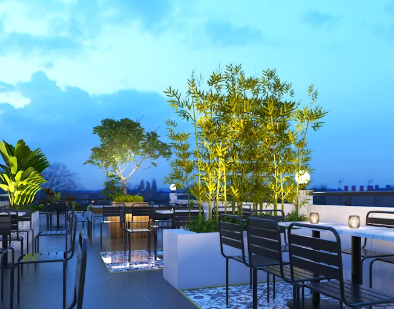 Khu vực ăn uống trên sân thượng tại R&B Tea 16 Đường số 1 (Gò Vấp, Hồ Chí Minh)Bàn ghế trên sân thượng được quán sử dụng vật dụng kim loại là chính. Điều này tránh sự ảnh hưởng của gió trời làm hư hại bàn ghế, giúp gia tăng trải nghiệm của khách hàng.
Sân thượng của R&B Tea được trang trí thêm một số cây xanh, tạo cảm giác thư thái và dễ chịu cho khách hàng. Ánh điện từ các chậu cây tăng phần lãng mạn, rất lý tưởng cho bạn và người ấy có một cuộc hẹn đấy!
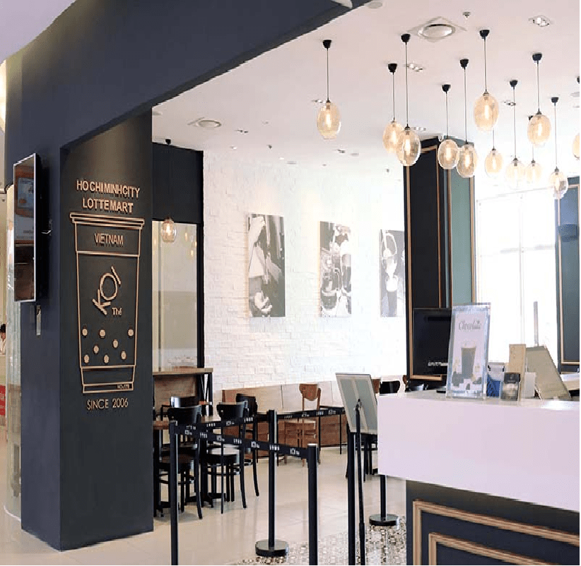 Khu vực tầng 1 của R&B Tea 17 Phố Tiểu Nam, Tân Phú (Quận 7, Hồ Chí Minh)Với khu vực tầng trệt, thường dành cho các bạn mua takeaway hoặc nhóm nhỏ (gồm 2-4 bạn), nên quán chỉ bố trí những chiếc ghế nệm đơn. Đồng thời, trên trần và tường là những quả bong bóng trắng xanh, với mục đích thay cho những chậu cây.
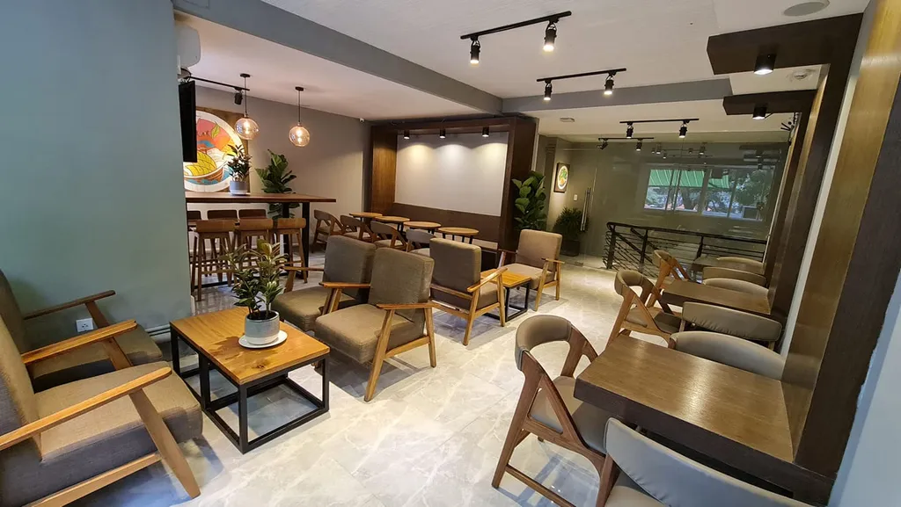 Khu vực tầng 2 của R&B Tea 17 Phố Tiểu Nam, Tân Phú (Quận 7, Hồ Chí Minh)Quán sử dụng ánh sáng đèn vàng làm chủ đạo, kết hợp với màu gỗ trầm từ bàn ghế, để tạo cảm giác ấm cúng, dễ chịu. Khu vực bên trên được bố trí những chiếc bàn dài dành cho những cuộc họp nhóm.
 Sự thanh lịch của một quý cô là cảm giác bạn cảm nhận được ở R&B Riverside (Mỹ)
Sự thanh lịch của một quý cô là cảm giác bạn cảm nhận được ở R&B Riverside (Mỹ)
Từ bức ảnh, bạn có thể thấy được tông màu chủ đạo của quán là trắng, điểm tô trong đó là những ánh vàng từ kim loại và ánh xanh từ cây cối xung quanh. Những chiếc ghế cách điệu giúp cho quán trở nên cuốn hút hơn.
Việc sử dụng triệt để ánh sáng tự nhiên từ khung cửa lớn, nên dù diện tích khá khiêm tốn nhưng quán vẫn rất thoáng đãng.
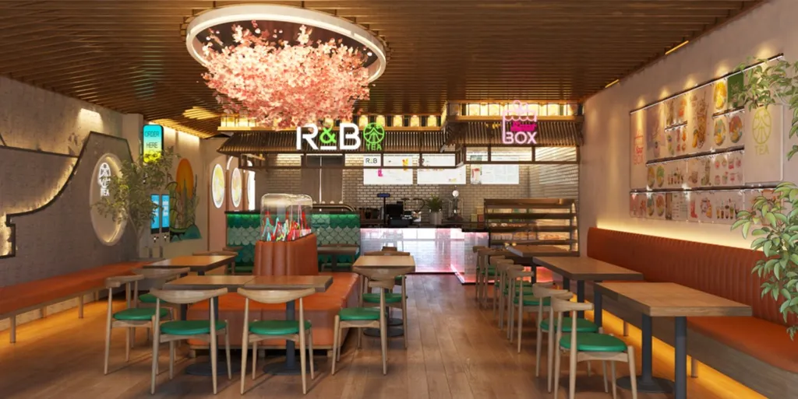 Không gian bên trong R&B Tea tại Vietnam Town - MỹMàu sắc của quán cùng ánh hồng từ đèn chùm cho ta cảm giác như ở Nhật Bản. Bộ ghế được trang bị lót đệm màu xanh nhẹ nhàng, giúp tránh được cảm giác nặng nề thường xuất hiện khi sử dụng màu nâu trầm. Đây cũng là một trong những chi nhánh đẹp của R&B Tea tại Mỹ.
Từ những điểm nổi bật trên, R&B Tea hoàn toàn xứng đáng trở thành một địa điểm cho các bạn ghé qua và thưởng thức. Nếu bạn đang tìm kiếm một địa điểm để trải nghiệm những món đồ uống ngon, không gian đẹp thì trà sữa R&B Tea chính là sự lựa chọn cho bạn.